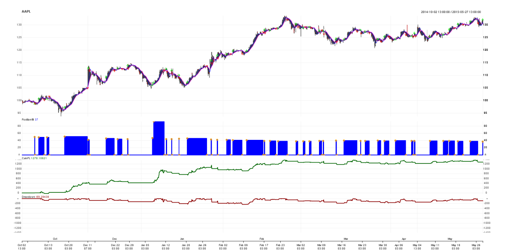

(Example) System Evaluation (v1)
Table of Contents
1 Prolog
This is an example system evaluation report. This is the first attempt at such a report. At current it does not address compare/contrast of systems, but aims to show ALL details that would make sense to address for a system.
It's loosely based on the strategy_x3.R program.
All input data is currently at hourly frequency.
2 System
2.1 Technical Analysis
| Indicator | Formula |
|---|---|
SMAFast |
SMA(10) |
SMASlow |
SMA(20) |
ATR |
(TTR package default) |
MACrossover |
sigCrossover(columns=c("SMAFast", "SMASlow")) |
2.2 Entry
SMAFast crosses above SMASlow.
2.3 Exit
Crosses back
2.4 Key Performance Indicators
| Expectancy | 2.54 | tradeStats("default")$Profit.Factor |
$Max.Drawdown$ |
-235.4432 | (Should also be in terms of account %) |
| MAR | ? | |
| Longest Drawdown | 4 | (code in strategy_x3.R) |
3 Indicators
Showing only one month. Need good detailed view for technical
indicators. Black line is some attempt at ATR stop. Blue is
SMAFast.
(NOTE: Need a lot of work on this graph. It needs to ideally be interactive.)
4 chart.Posn
Trades, entry/exit signals, equity curve, drawdown graph

5 Return Distribution & MAE / MFE
- Return distribution amount is percentage of account size
5.1 Improvements
- Add a cumulative line
- Add a second percentage on the side
- "Split" it over 0 if possible
- Gain inspiration from http://www.tradingblox.com/Manuals/UsersGuideHTML/index.html?rmultipledistributiongraph.htm
6 E-Ratio
TBD: Need analysis of this. This is entry edge only.
7 Trade stats
| AAPL | Note | |
|---|---|---|
| Num.Txns | 82 | |
| Num.Trades | 40 | |
| Net.Trading.PL | 1278.108 | |
| Avg.Trade.PL | 32.01283 | |
| Med.Trade.PL | -8.24 | |
| Gross.Profits | 2113.47 | |
| Gross.Losses | -832.9573 | |
| Std.Dev.Trade.PL | 126.8929 | |
| Profit.Factor | 2.53731 | expectancy |
| Avg.Daily.PL | 32.83367 | |
| Med.Daily.PL | -9.88 | |
| Std.Dev.Daily.PL | 128.3279 | |
| Ann.Sharpe | 4.061614 | |
| Max.Drawdown | -235.4432 | |
| Profit.To.Max.Draw | 5.428521 | |
| Avg.WinLoss.Ratio | 3.432831 | |
| Med.WinLoss.Ratio | 0.9816733 | |
| Max.Equity | 1367.403 | |
| Min.Equity | -26.596 | |
| End.Equity | 1278.108 |
Win/loss stats
| Winner | Loser | |
|---|---|---|
| Largest | 493.8 | -50.13 |
| Average | 124.32 | -36.22 |
| Median | 48.36 | -49.27 |
| Percent | 42.5 | 57.5 |
8 Stuff to add:
- Normalize
- My "E-Ratio" like number that takes the whole system into account
- Include fees into calculations
- Weekly and/or monthly return and drawdown
- R-normalized numbers for comparison
- Log-scale the equity curve
- Longest drawdown duration, etc
8.1 System Performance Stats
8.2 Curtis Faith Evaluation
- From Way of the Turtle (pg 148)
| System | CAGR% | MAR | Sharpe | Trades | W% | Max DD | DD Length |
|---|---|---|---|---|---|---|---|
| ATR CBO | 45.9% | 1.15 | 1.27 | 216 | 43.1% | 40.0% | 8.3 |
| Bollinger CBO | 49.2% | 1.44 | 1.47 | 136 | 53.7% | 34.1% | 7.8 |
| Donchian Trend | 27.4% | 0.75 | 0.94 | 1901 | 38.7% | 38.7% | 27.6 |
| Donchian Time | 57.1% | 1.31 | 1.34 | 773 | 59.1% | 43.6% | 12.1 |
| Dual MA | 49.1% | 1.04 | 1.34 | 222 | 36.9% | 47.2% | 8.3 |
| Triple MA | 41.2% | 0.97 | 1.21 | 186 | 41.9% | 42.3% | 8.5 |
8.3 MetaStock System Tester
- From MetaStock User's Manual pg 521
- Check for description of metrics